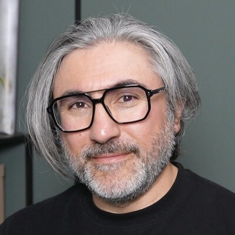
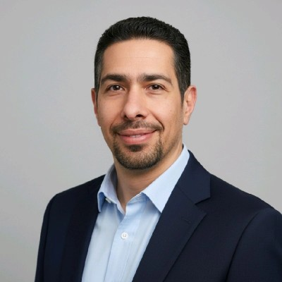
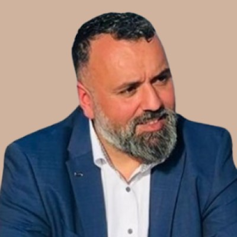

Verdachte van onafgebroken kennisdelen. Alle aanwijzingen komen uit zijn eigen openbare
sporen — hij heeft zichzelf verlinkt. Puur voor de lol: geen roddel, geen beschuldiging,
geen geheim dossier (hij zet alles zelf online).
18 draden · 16 aanwijzingen · beweeg je muis: er komt een loep bij
ALLEEN OPENBARE BRONNEN • GEEN BESCHULDIGINGEN • GEEN RODDELS • WEL EEN HEEL TROTSE ONDERZOEKER • ALLEEN OPENBARE BRONNEN • GEEN BESCHULDIGINGEN • GEEN RODDELS • WEL EEN HEEL TROTSE ONDERZOEKER •
Persoon 001 · vastgesteld

Sayf Jawad
@sayfjawad · IJsselstein (Utrecht)
Voorzitter Stichting Duurzaam AI
Opsporingsbericht
GEZOCHT
Wegens open source-wangedrag en het eigenhandig omzetten van 346 gemeentewebsites.
Beloning: 346 gemeente-websites, gratis voor iedereen.
Laatst gezien: bij Eneco, hardop architecterend.
Bewijsstuk A · loopbaan
Van elektricien tot architect
Zijn eigen GitHub-bio in één regel:
Elektricien
Mediattechnoloog
Softwareontwikkelaar
Software Architect
Vier carrièreswitch — de recherche vermoedt een patroon.
Verder: 26 jaar professionele ervaring (LinkedIn).
Bron: github.com/sayfjawad · LinkedIn
Alibi’s gecheckt
Software Architect bij Eneco
Software Architect — Eneco (huidig)
Freelance — 7 maanden
Full-stack developer — Eonics
Senior software developer — Decathlon NL
Freelance Java developer — Ctac
Alibi’s gecheckt en in orde. Bron: LinkedIn-profiel
Volg het geld
Multicode
Contactadres in al zijn eigen projecten:
sayf@multicode.nl
De website van de stichting is volgens de footer
“gemaakt en volledig gesponsord door Multicode”.
Volg het geld: hij sponsort de website van zijn eigen
vrijwilligerswerk. Bron: multicode.nl · stichtingduurzaamai.nl
SPONSOR
Bewijsmateriaal · inbeslaggenomen
@sayfjawad
eleven-proof-lib — Java-bibliotheek voor de elfproef (BSN en bankrekeningnummers)
slimme-archief-zoeker — semantisch zoeken in het politieke archief
abo-ali-search — RAG over een Arabisch videoarchief
Drie repo’s, geen cloud, geen excuses. De transcripties zitten
ín de repo, zodat je niets hoeft te downloaden om te beginnen.
Zaak 01 · Kamerstukken
Slimme Archief Zoeker
Zoeken op betekenis — niet op trefwoord — door Kamerverslagen, Handelingen en
debatvideo’s van Nederlandse politici. Elk resultaat met bron, datum en een
link die op het exacte moment in de video begint.
Per politicus te configureren (config/wilders.json,
yesilgoz.json); het archief zelf wordt gedeeld.
Motief volgens de verdachte: “laat het archief zichzelf
narekenen.” Bron: github.com/sayfjawad/slimme-archief-zoeker
Zaak 02 · 500 GB bewijs
Abo Ali Search + scrib-r
Ongeveer 2.500 video-afleveringen (2015–2026, circa 500 GB) doorzoekbaar
op betekenis: BGE-M3-embeddings, spraakherkenning en het taalmodel draaien
allemaal op eigen GPU’s.
Opgezet als fact-checkproject: elke claim terug te vinden
met tijdcode en afspeelbare clip. Live op aboali.scrib-r.com — uit die pijplijn
groeide ook het transcriptieportaal scrib-r.
De verdachte heeft het videobewijs eigenhandig getranscribeerd.
Voor ons valt er dus weinig meer te doen. Bron: github.com/sayfjawad/abo-ali-search
Zaak 03 · openbaar nut
Slimme Gemeente Assistent
Alle 346 gemeentewebsites omgezet naar één doorzoekbare AI-chat, met
bronverwijzing bij elke bewering. Open source en gratis voor gemeenten én inwoners.
Eerste gemeenten sinds augustus 2026: IJsselstein,
Nieuwegein, Vijfheerenlanden, Utrecht en Houten.
Inwoners kunnen de verdachte gewoon vragen stellen via de chat.
Wij ook. Bron: stichtingduurzaamai.nl → publicaties
Plaats delict
Stichting Duurzaam AI
Opgericht 06-01-2026 · zetel gemeente IJsselstein
KvK 99418428 · RSIN 868981850
IBAN NL84 ABNA 0152 4458 97
ANBI-status aangevraagd
Bestuurders ontvangen geen beloning — verdacht principieel
Bron: stichtingduurzaamai.nl → ANBI Transparantie
Tijdlijn van het kennisdelen
Waar hij opdook
Getuigen waren steevast onder de indruk.
06-01-2026 — oprichting Stichting Duurzaam AI
28-03-2026 — kennissessie bij de Iraakse IT-vereniging IN-IT; Ali Al-Jaberi wordt eerste ambassadeur
augustus 2026 — Slimme Gemeente Assistent live voor de eerste gemeenten
2026 — bootcamp in de Ardennen met twintig IT-professionals
26-09-2026 — praktijkgerichte AI-training in Ridderkerk
“Digitale soevereiniteit is ontzettend belangrijk —
voor overheid, bedrijfsleven én burgers.”
“Onze missie is om AI laagdrempelig te maken, zodat meer mensen begrijpen
wat het is en hoe je het duurzaam gebruikt.”
Bij zijn eigen projecten: “No cloud APIs anywhere: embeddings, ASR
and the LLM all run on own GPUs.” — Bron: LinkedIn-posts · stichtingduurzaamai.nl
Medeplichtigen (vrijwillig)
Het bestuur — vier zetels

Manhal Al-Rubaiy Secretaris · medeoprichter
Menno van Wieringen Penningmeester

Ashraf Arab Bestuurslid — dat ben jij
Plus Sayf zelf als voorzitter. Allen onbetaald, dus verdacht gemotiveerd.
Bron: stichtingssite → Bestuur & Beloning
Handlangers met een missie
Gezichtsbepalers, vrijuit
Ali Sultan — trainer en trainingsacteur
Ali Al-Jaberi — moderator, tv-journalist en public speaking coach
Akeel Almosawi — “titels zeggen niets, echtgenoot en vader”
Alles hierboven komt uit bronnen die Sayf zélf publiceert: LinkedIn, GitHub
en de site van de stichting. Hij heeft zichzelf verlinkt, wij hoefden alleen
maar te knippen en te plakken.
Geen insider-info, geen roddel, geen echte beschuldiging —
behalve dan de aanklacht “te behulpzaam”.
Iets onjuist of ontbreekt er iets? Zeg het, dan pin ik er een
nieuw briefje bij.
Verdachtenlijst
Verdachte: één persoon
Sayf Jawad, voorzitter (1x)
Ten laste gelegd: onafgebroken kennisdelen
Verzwarende omstandigheid: doet dit volledig onbetaald
Motief: “AI laagdrempelig maken”
Het onderzoek loopt al … dagen
en hij is nog steeds niet gestopt.
Geen medeverdachten die willen praten — behalve Manhal, Menno en jij.
Getuigenverklaringen
Letterlijk geciteerd
“Wat een eer om ambassadeur te mogen zijn voor deze geweldige club
tech-idealisten!” — Ali Al-Jaberi
“AI verandert het werk van IT-professionals.
Daarom organiseren we een praktische 1-daagse AI-training.” — Manhal Al-Rubaiy
“Wij vinden digitale soevereiniteit ontzettend
belangrijk.” — de verdachte zelf
Alle drie ondertekend op LinkedIn, dus officieel gewoon openbaar.